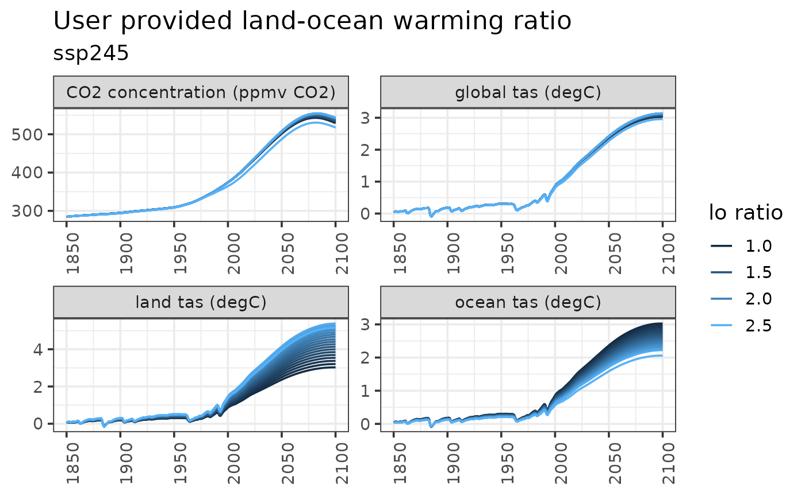
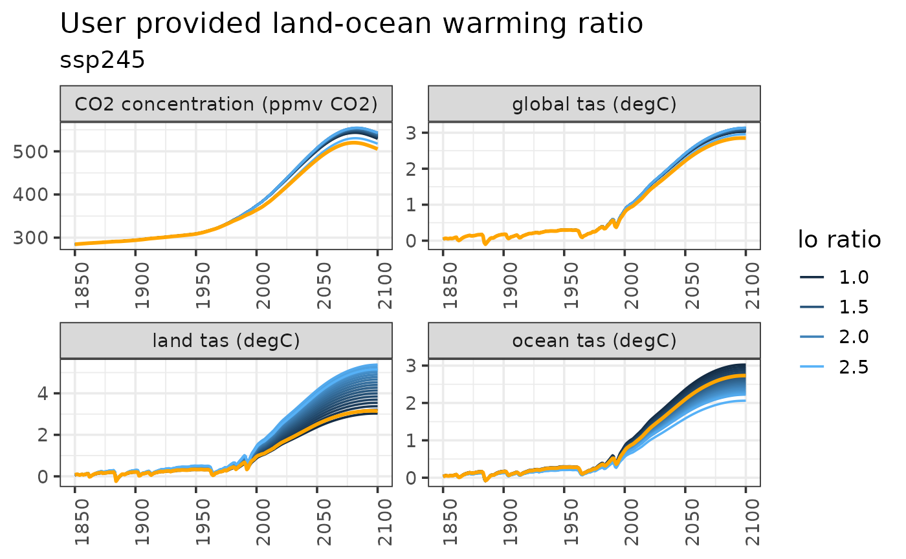

Introduction
Hector uses DOECLIM1, a diffusion ocean-energy balance, to calculate mean global air temperature from sea-surface and land-surface temperature anomalies. DOECLIM can simulate the different rates of warming over land and ocean surfaces, meaning that the land-ocean warming ratio is an emergent property of Hector. However, users also have the option to provide a land-ocean warming ratio to be used in place of DOECLIM’s internal calculations. This enables Hector to emulate the land-ocean warming dynamics of specific Earth System Models.
This vignette demonstrates how providing a user-defined land-ocean warming ratio can affect Hector output.
Run default Hector
Complete a default run of Hector, one that uses DOECLIM to calculate land and ocean air temperature.
years_to_keep <- 1850:2100
vars_to_keep <- c(GLOBAL_TAS(), LAND_TAS(), OCEAN_TAS(), CONCENTRATIONS_CO2())
inifile <- file.path(system.file("input", package = "hector"), "hector_ssp245.ini")
core <- newcore(inifile)
run(core, max(years_to_keep))## Hector core: Unnamed Hector core
## Start date: 1745
## End date: 2300
## Current date: 2100
## Input file: /home/runner/work/_temp/Library/hector/input/hector_ssp245.ini
out1 <- fetchvars(core, years_to_keep, vars_to_keep)
out1$scenario <- "default"
out1$variable <- paste0(gsub(out1$variable, pattern = "_", replacement = " "),
" (", out1$units, ")")
ggplot(data = out1) +
geom_line(aes(year, value)) +
facet_wrap("variable", scales = "free") +
labs(title = "Default Hector",
subtitle = "ssp245",
x = NULL) +
theme(axis.text.x = element_text(angle = 90))Run Hector with different land ocean warming ratios
Start by writing a function to help us set the land ocean warming ratio, run Hector, and fetch some results.
# Helper function that runs a Hector core with a new land-ocean warming ratio.
#
# Args
# hc: an active Hector core
# value: the land ocean warming ratio to use
# Return: data frame of Hector results
run_with_lo <- function(hc, value) {
# Set the land ocean warming ratio
setvar(hc, NA, LO_WARMING_RATIO(), value, getunits(LO_WARMING_RATIO()))
# Reset and run Hector
reset(hc)
run(hc)
# Fetch and format the output
out <- fetchvars(hc, years_to_keep, vars_to_keep)
out$scenario <- value
out$variable <- paste0(gsub(out$variable, pattern = "_", replacement = " "),
" (", out$units, ")")
return(out)
}
# Make a vector of the land ocean warming ratios to test out
lo_to_use <- seq(from = 1, to = 2.5, length.out = 20)
# Apply our helper function to the various land ocean warming ratio values and
# concatenate the results into a single data frame
results_list <- lapply(lo_to_use, run_with_lo, hc = core)
hector_lo_results <- do.call(results_list, what = "rbind")Plot the results
ggplot(data = hector_lo_results) +
geom_line(aes(year, value, color = scenario, group = scenario)) +
facet_wrap("variable", scales = "free") +
labs(title = "User provided land-ocean warming ratio",
subtitle = "ssp245",
x = NULL,
y = NULL) +
theme(axis.text.x = element_text(angle = 90)) +
guides(color = guide_legend(title = "lo ratio"))
Compare default Hector with user provided land ocean warming ratio
## Warning: Using `size` aesthetic for lines was deprecated in ggplot2 3.4.0.
## ℹ Please use `linewidth` instead.
## This warning is displayed once every 8 hours.
## Call `lifecycle::last_lifecycle_warnings()` to see where this warning was
## generated.